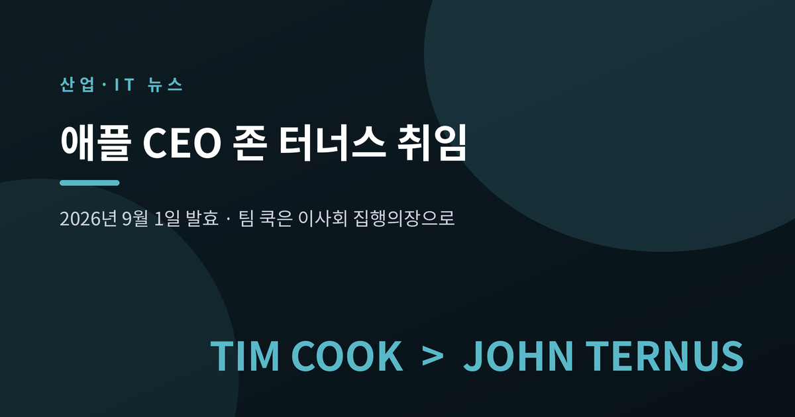
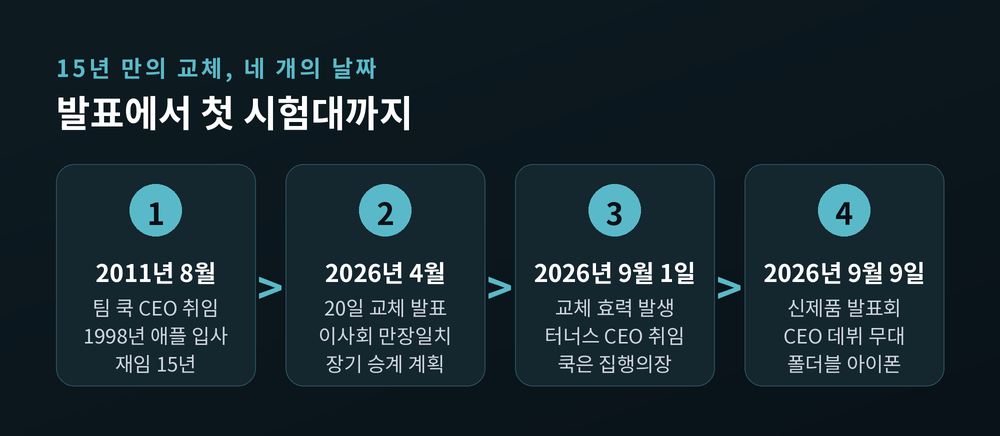
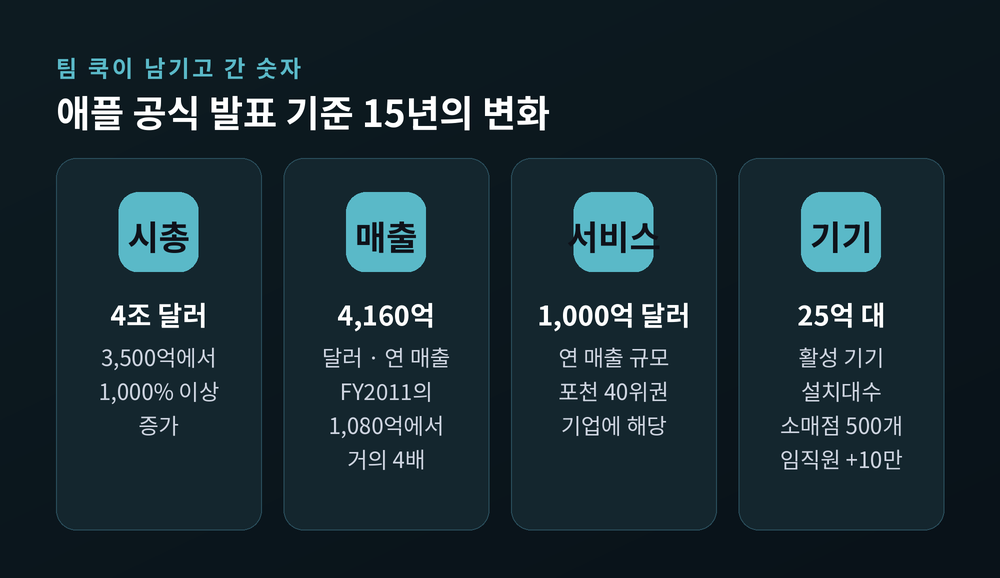
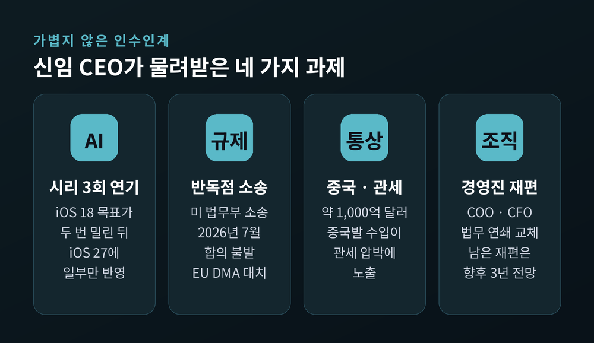
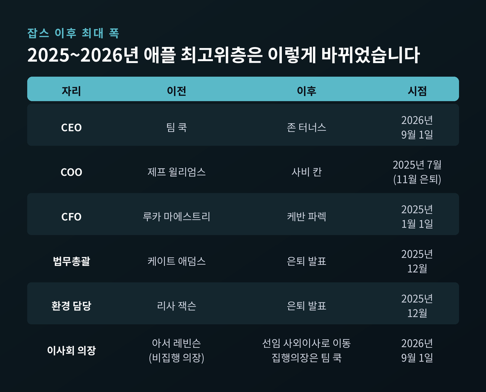
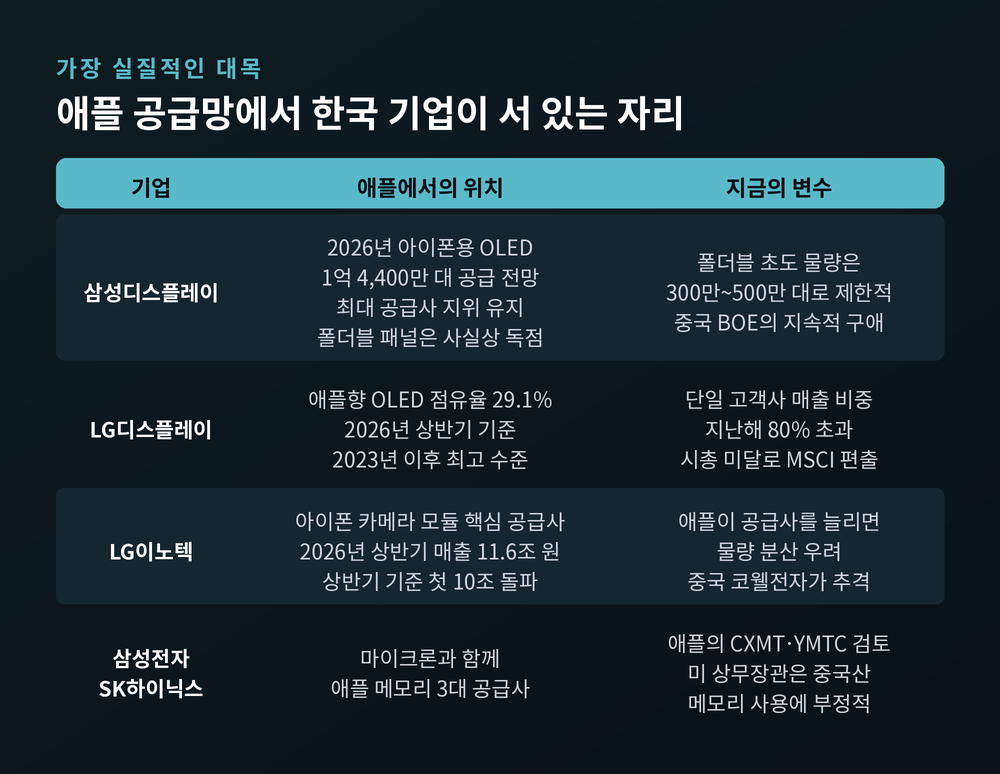

하드웨어 엔지니어 출신 CEO가 애플과 한국 부품업계에 뜻하는 것
이번 글에서는 2026년 9월 1일자로 발효된 애플의 CEO 교체를 정리해 보겠습니다. 팀 쿡이 15년 만에 물러나고, 하드웨어 엔지니어링을 총괄해온 존 터너스가 지휘봉을 잡았습니다. 이 변화가 애플 자신과 한국 부품·반도체 업계에 어떤 의미인지까지 함께 살펴보겠습니다.

첫째, 애플은 2026년 4월 20일 공식 발표를 통해 CEO 교체를 예고했고, 그 효력이 2026년 9월 1일에 발생했습니다.
둘째, 팀 쿡은 이사회 집행의장(executive chairman)으로 이동해 전 세계 정책 입안자 대응을 계속 맡습니다.
셋째, 신임 CEO는 하드웨어 엔지니어링 수석부사장이던 존 터너스입니다. 애플 역사상 세 번째 CEO이자, 제품을 직접 설계해온 현장 엔지니어 출신입니다.
애플의 공식 보도자료는 2026년 4월 20일에 나왔습니다. 캘리포니아 쿠퍼티노 발신이었습니다.
내용은 간결했습니다. 팀 쿡이 이사회 집행의장이 되고, 하드웨어 엔지니어링 수석부사장 존 터너스가 차기 최고경영자가 된다는 것. 효력 발생일은 2026년 9월 1일로 못 박혔습니다.
이 인사는 이사회 만장일치 승인을 거쳤습니다. 애플은 이를 두고 "장기간에 걸친 신중한 승계 계획의 결과"라고 설명했습니다. 갑작스러운 사퇴가 아니라 오래 준비된 이양이라는 뜻입니다.
쿡은 여름 내내 CEO 자리를 지키며 인수인계에 집중했습니다. 그리고 8월 31일 현지시간, 소셜미디어에 "CEO로서 마지막 날"이라는 글을 남겼습니다. "내일부터 직함은 달라지지만, 애플에 대한 사랑은 변하지 않을 것"이라는 문장이 함께 붙었습니다.
이사회 구성도 같은 날 바뀌었습니다. 지난 15년간 비집행 의장을 맡아온 아서 레빈슨은 선임 사외이사로 자리를 옮겼습니다. 터너스는 9월 1일자로 이사회에 합류했습니다.

애플이 공식 보도자료에 직접 적은 수치들이 있습니다. 15년의 무게를 가늠하는 데 도움이 됩니다.
시가총액은 약 3,500억 달러에서 4조 달러로 늘었습니다. 1,000% 이상의 증가입니다. 다만 국내 매체가 퇴임 시점인 9월 1일에 보도한 수치는 4조 6,000억 달러였습니다. 두 숫자는 기준 시점이 다릅니다. 4월 발표 시점과 9월 퇴임 시점의 차이로 보시면 되겠습니다.
연 매출은 2011 회계연도 1,080억 달러에서 2025 회계연도 4,160억 달러 이상으로 늘었습니다. 거의 네 배입니다.
서비스 부문은 연 1,000억 달러가 넘는 사업으로 자랐습니다. 포천 40위권 기업 하나가 애플 안에 들어앉은 셈입니다.
활성 기기 설치대수는 25억 대 이상. 소매점은 500개 이상. 사업 국가는 200곳 이상. 임직원은 재임 중 10만 명 이상 늘어 현재 15만 명을 넘습니다.
탄소발자국은 2015년 대비 60% 이상 줄었습니다. 같은 기간 매출이 거의 두 배가 된 것을 감안하면 적지 않은 수치입니다.
애플워치, 에어팟, 비전 프로라는 새 카테고리가 이 기간에 만들어졌습니다. 애플 자체 설계 실리콘으로의 전환도 공식 보도자료가 꼽은 쿡 재임기의 성과입니다.

이력은 담백합니다.
펜실베이니아대에서 기계공학을 전공했습니다. 애플에 오기 전에는 버추얼 리서치 시스템스에서 기계 엔지니어로 일했습니다. 가상현실 헤드셋을 설계하던 자리였습니다.
2001년 애플 제품 디자인팀으로 입사했습니다. 2013년 하드웨어 엔지니어링 부사장, 2021년 수석부사장으로 임원진에 합류했습니다. 25년을 한 회사에서 보낸 정통 내부 인사입니다.
손을 댄 제품 목록이 이력서를 대신합니다. 아이패드와 에어팟이라는 새 제품군의 도입에 결정적 역할을 했습니다. 아이폰과 맥, 애플워치의 여러 세대를 총괄했습니다.
가까운 성과도 있습니다. 2025년 가을 아이폰 라인업 재편이 그의 팀 작업이었습니다. 아이폰 17 프로와 프로 맥스, 얇고 튼튼한 아이폰 에어, 그리고 아이폰 17이 함께 나왔습니다. 맥에서는 맥북 네오가 새로 등장했습니다.
에어팟을 일반의약품 보청기로도 쓸 수 있게 만든 청력 건강 기능, 애플워치 울트라 3의 3D 프린팅 티타늄, 재활용 알루미늄 합금도 그의 영역이었습니다.
터너스 본인은 취임 소감에서 이렇게 말했습니다. "스티브 잡스 밑에서 일할 수 있었고, 팀 쿡을 멘토로 둔 것이 행운이었다."
잡스는 "무엇을 만들 것인가"에 답한 경영자였습니다. 쿡은 "어떻게 팔 것인가"에 답했습니다. 공급망과 운영을 다듬어 애플을 세계 최대 기업으로 키운 것이 그의 방식이었습니다.
터너스에게는 세 번째 질문이 주어집니다. "어떻게 만들 것인가."
블룸버그는 애플이 본질적으로 기기를 만드는 회사라는 점에서 터너스의 하드웨어 경험을 강점으로 봤습니다. 저도 이 지점이 이번 교체의 핵심이라고 생각합니다.
예전 애플의 CEO는 물류와 재고를 읽는 사람이었습니다. 지금 애플의 CEO는 부품 스펙과 수율을 읽는 사람입니다. 이 차이는 부품을 납품하는 쪽에서 훨씬 크게 체감될 것입니다.
가장 급한 것은 AI입니다.
시리 전면 개편은 세 차례 미뤄졌습니다. 당초 2024년 iOS 18이 목표였습니다. 2025년 봄으로 밀렸고, 다시 2026년 봄으로 밀렸으며, 결국 2026년 9월 iOS 27에 일부만 반영되는 것으로 정리됐습니다. 지연된 애플 인텔리전스 기능을 두고 집단소송까지 제기된 상태입니다.
보도에 따르면 이번 시리 AI는 대기자 명단 방식으로 시작하며, 유럽연합에서는 이용이 막혀 있다고 합니다. 애플은 구글과 손잡고 차세대 파운데이션 모델을 개발하며 제미나이를 자사 아키텍처에 통합하고 있습니다.
규제도 만만치 않습니다. 미 법무부의 반독점 소송이 진행 중이고, 2026년 7월 기준 합의 협상은 타결되지 않았습니다. 유럽연합 디지털시장법과의 대치도 계속됩니다.
여기서 한 가지 한계를 짚어야겠습니다. 터너스는 CEO 취임 시점까지 의회 증언 경험이나 규제 대응 이력이 없습니다. 반독점, 데이터 프라이버시, AI 거버넌스, 통상 정책에 관한 공개 입장을 낸 적도 없습니다. 쿡이 집행의장으로 남아 정책 대응을 계속 맡기로 한 배경이 여기 있다고 보는 것이 자연스럽습니다.
중국과 관세도 있습니다. 약 1,000억 달러 규모의 중국발 수입이 관세 압박에 노출돼 있다는 분석이 나옵니다.

2025년부터 애플의 최고위층은 크게 흔들렸습니다.
CFO 자리는 2025년 1월 1일자로 루카 마에스트리에서 케반 파렉으로 넘어갔습니다. COO는 2025년 7월 제프 윌리엄스가 사비 칸에게 넘겼고, 윌리엄스는 같은 해 11월 은퇴했습니다. 법무총괄 케이트 애덤스와 환경 담당 리사 잭슨의 은퇴는 2025년 12월에 발표됐습니다.
해석은 갈립니다.
한쪽에서는 이를 잡스 사망 이후 최대 규모의 리더십 이탈로 봅니다. AI, 디자인, 법무, 운영, 재무 전 부문에 걸친 퇴임 물결이라는 것입니다.
다른 쪽 시각은 다릅니다. 애플인사이더는 2024년 시점에 이미 쿡 본인과 COO, CFO, 법무총괄이 모두 은퇴 또는 반은퇴를 원한다는 사실이 파악됐고, 회사가 의도적으로 시차를 두어 배치한 결과라고 봅니다. 갑작스러운 은퇴 러시는 없었다는 반론입니다.
어느 쪽이 맞는지는 아직 단정하기 어렵습니다. 다만 결과만 보면, 터너스는 상당 부분 새로 짜인 팀을 넘겨받았습니다. 블룸버그 보도를 인용한 관측에 따르면 COO 사비 칸, CFO 케반 파렉, 서비스 총괄 에디 큐의 역할이 커질 것으로 예상되며, 하드웨어·마케팅·리테일·인사의 재편은 향후 3년에 걸쳐 진행될 전망입니다.

여기가 국내 독자에게 가장 실질적인 대목입니다.
먼저 디스플레이입니다. 아이폰 프로 라인업에 들어가는 LTPO OLED의 주요 공급사는 삼성디스플레이와 LG디스플레이입니다. 2026년 아이폰용 OLED 패널 총수요는 2억 6,470만 대로 전망되며, 이 중 삼성디스플레이가 1억 4,400만 대를 공급해 최대 공급사 지위를 지킬 것으로 예상됩니다. LG디스플레이의 애플향 OLED 점유율은 2026년 상반기 기준 29.1%로 2023년 이후 가장 높습니다.
문제는 의존도입니다. LG디스플레이의 단일 고객사 매출 비중은 지난해 80%를 웃돌았습니다. 애플의 결정 하나가 실적을 흔드는 구조입니다. 여기에 LG디스플레이는 최근 시가총액 미달로 MSCI 지수에서 편출되기도 했습니다.
폴더블 아이폰은 다른 그림입니다. 폴더블 패널은 삼성디스플레이가 사실상 독점 공급합니다. 다만 초도 물량은 300만~500만 대 수준으로 제한적일 것이라는 전망입니다.
카메라 모듈에서는 LG이노텍이 긴장하고 있습니다. 애플이 공급사를 늘려 가격 협상력을 높이려 할 경우 물량이 분산될 수 있다는 우려가 나옵니다. 중국 코웰전자가 그 틈을 노리는 중입니다. LG이노텍의 2026년 상반기 매출은 11조 6,000억 원으로 상반기 기준 처음 10조 원을 넘어섰습니다. 그만큼 잃을 것도 커졌다는 뜻이기도 합니다.
메모리 쪽은 정치가 얽힙니다. 애플은 중국 CXMT와 YMTC의 메모리 사용을 검토한 것으로 알려졌고, 월스트리트저널 보도에 따르면 하워드 러트닉 미 상무장관은 "미국 기업이 중국산 메모리를 쓰는 것은 바람직하지 않다"는 입장을 전달했습니다. 애플의 현재 메모리 공급망은 삼성전자, SK하이닉스, 마이크론입니다.
전문가 시각도 갈립니다.
백종섭 건양대 반도체공학부 교수는 "LG디스플레이와 LG이노텍이 애플과 거래한 지 20년 가까이 됐고, 두 회사 모두 애플 요청에 가장 적극적으로 대응해왔기에 애플이 쉽게 공급망을 바꾸는 무리수는 두지 않을 것"이라고 봤습니다. 다만 "긴장의 끈을 놓아선 안 된다"는 단서를 달았습니다.
염승환 LS증권 이사의 관점은 조금 다릅니다. "미국이 애플 공급망을 규제할 경우 부품보다 반도체 기업의 영향이 클 것이며, 그럴 경우 스마트폰 경쟁사인 삼성전자보다 SK하이닉스에 호재가 될 수 있다"는 것입니다.

시장의 첫 반응은 나쁘지 않았습니다. 취임 당일인 9월 1일 애플 주가는 장중 최대 약 3% 올랐고 종가는 약 2.6% 상승으로 마감했습니다. 같은 날 나스닥은 하락했습니다. 예고된 승계와 내부 승진이 주는 연속성을 투자자들이 대체로 환영했다는 평가가 나왔습니다.
다만 애널리스트들의 태도는 조심스럽습니다. 로젠블라트는 9월 1일 목표주가를 300달러에서 303달러로 소폭 올리면서도 투자의견은 중립을 유지했습니다. 2026년 들어 주가가 약 20% 오른 상태여서 위험과 보상의 균형이 좁아졌다는 지적도 함께 나옵니다.
터너스의 첫 시험대는 곧 옵니다. 2026년 9월 9일 신제품 발표회가 CEO로서의 공식 데뷔전입니다. 폴더블 아이폰과 새 시리가 이 자리에서 어떻게 소개되는지가 관전 포인트입니다.
한국 기업 입장에서 볼 지점은 세 가지로 정리됩니다.
첫째, 하드웨어를 아는 CEO가 고사양 부품 수요를 늘릴 것인가. 둘째, 같은 이유로 더 정교한 단가 압박과 복수 공급사 전략이 들어올 것인가. 셋째, 미중 규제 지형이 한국 메모리·디스플레이의 자리를 지켜줄 것인가, 흔들 것인가.
세 질문의 답은 아직 나오지 않았습니다.
정리하면 이렇습니다.
애플은 파는 법을 아는 경영자에게서, 만드는 법을 아는 경영자에게로 넘어갔습니다. 그 변화가 가장 먼저 닿는 곳은 실리콘밸리가 아니라 부품을 만드는 공장입니다.
"CEO가 바뀌면 사양서가 바뀌고, 사양서가 바뀌면 공급망이 바뀐다."
9월 9일 무대에서 무엇이 공개될지 궁금하시다면, 제품 자체보다 그 제품에 어떤 부품이 들어갔는지를 함께 보시길 권합니다. 답의 절반은 거기 있을 것입니다.
이 글은 공개된 보도와 애플 공식 발표를 정리한 정보성 콘텐츠입니다. 본문에 언급된 주가·목표주가·기업 실적은 사실 전달 목적이며, 특정 종목의 매수나 매도를 권유하는 투자 권유가 아닙니다. 투자 판단과 그 책임은 투자자 본인에게 있습니다.
참고 소스